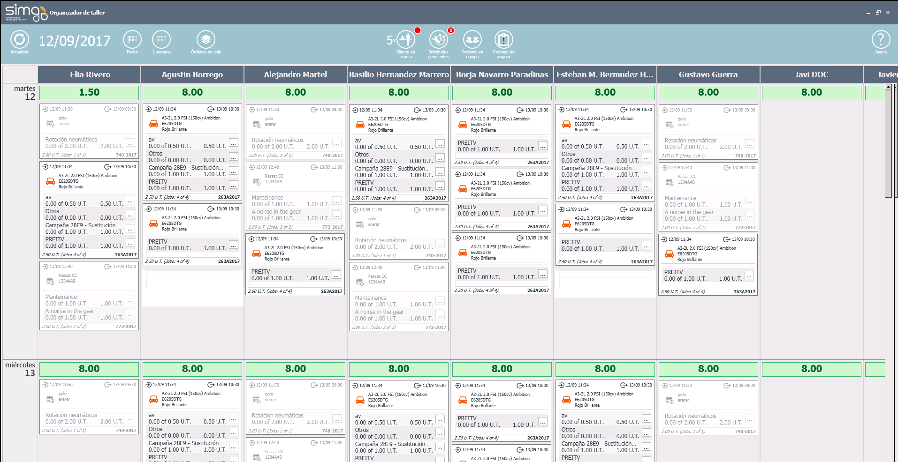

ORGANIZER
Organizer gestiona nuestro taller gracias dos áreas bien diferenciadas, el Área de notificaciones y el Área de organización.

Organizer nos permite gestionar los Mecánicos de nuestro taller, los bloques de trabajo y los trabajos del taller, todo ello agrupado por días.
Cabecera
Situada en la parte superior de la pantalla, nos permite:
Actualizar el panel de organización.
Seleccionar la fecha de partida para organizar el taller.
Seleccionar cuántas semanas de organización se quiere ver .
Visualizar órdenes en cola.
Visualizar el número de clientes en espera.
Visualizar las solicitudes de tiempo de los mecánicos.
Visualizar las órdenes que tienen trabajos asignados a equipos para re-asignarlos a mecánicos.
- Trabajos sin asignar.
Acceder a la documentación de ayuda .
Área de trabajo
Situada en la parte central de la pantalla, nos muestra los mecánicos del taller, la disponibilidad de los mecánicos y los bloques de trabajo y trabajos para cada vehículo. Además, nos facilita información sobre:
- Órdenes:

- Citas:

- Averías repetitivas:

También podemos consultar información sobre:

Fecha Planificada de recepción y fecha de Entrega del vehículo.
Trabajos iniciados y en los que se ha trabajado.
- Tiempo planificado para cada trabajo y bloque de trabajo.
 El Organizer agrupa en la orden correspondiente, y automáticamente, las averías no priorizadas de una misma orden.
El Organizer agrupa en la orden correspondiente, y automáticamente, las averías no priorizadas de una misma orden.
Y realizar las siguientes operaciones:
- Visualizar los trabajos de una orden en el miniorganizador (clic sobre la orden).
- Asignar un trabajo o bloque entre mecánicos (arrastrar y soltar).
- Priorizar los trabajos de los mecánicos (arrastrar y soltar en vertical).
Partir el trabajo y modificar el tiempo planeado desde .
 Los trabajos o bloques no se partirán si se asignan a un mecánico sin disponibilidad.
Los trabajos o bloques no se partirán si se asignan a un mecánico sin disponibilidad.